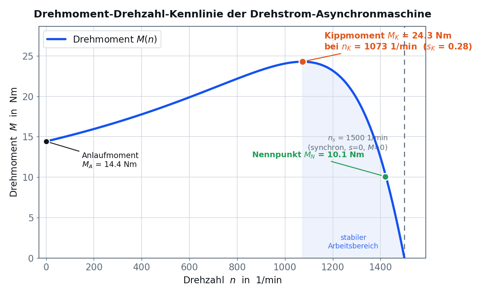
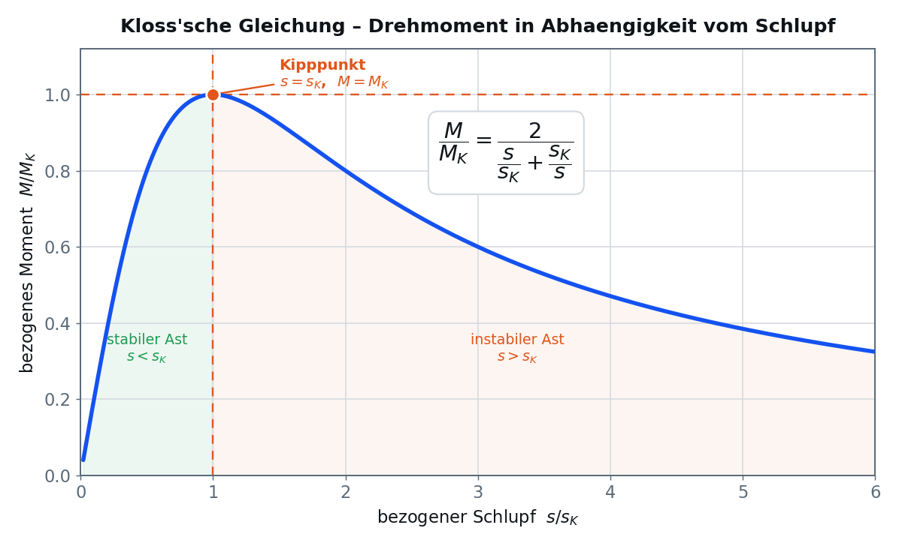
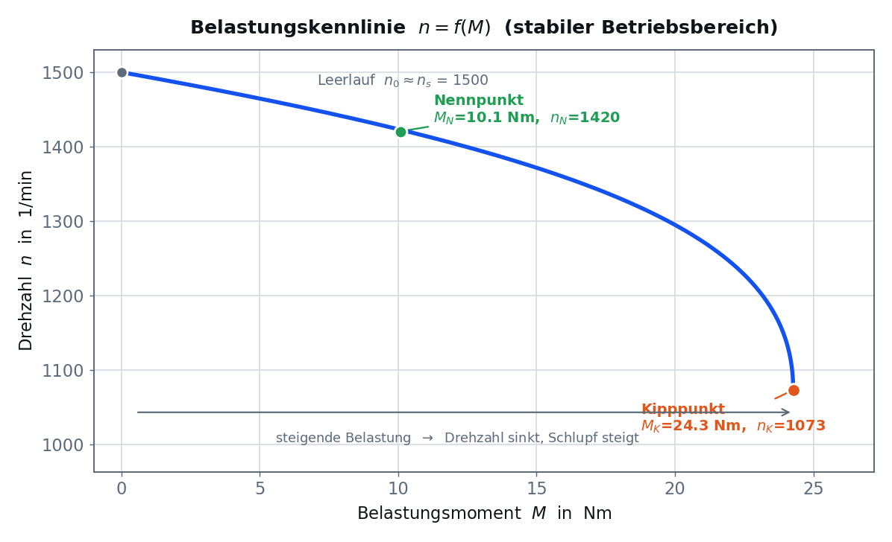
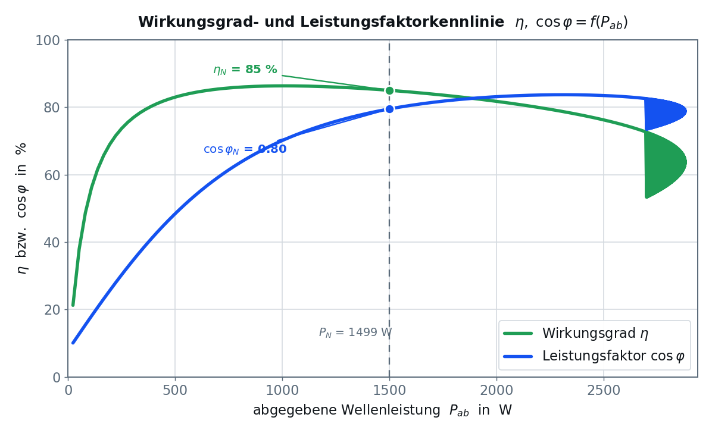
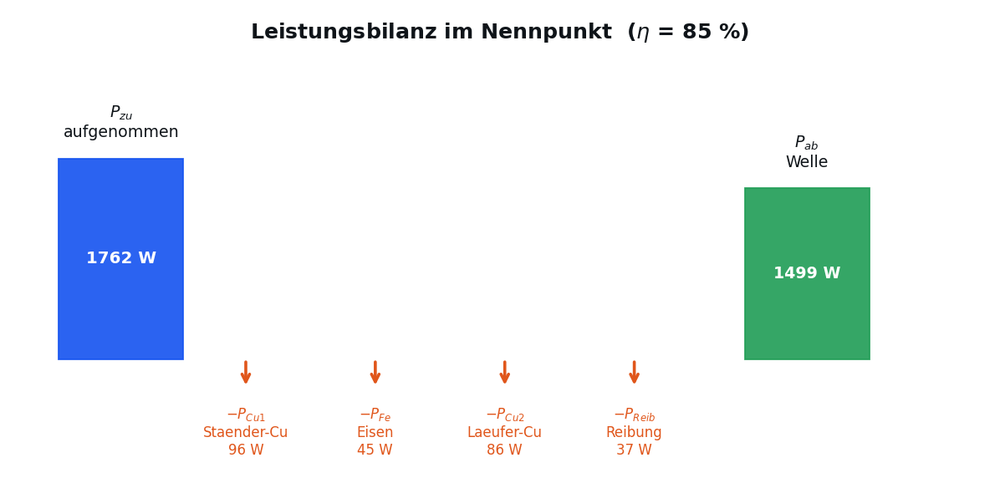

Alles, was du für den Antestat und den Versuch brauchst — vom Drehfeld über den Schlupf
bis zum Wirkungsgrad. Lies dieses Kapitel sorgfältig; die Antestat-Fragen werden hieraus gestellt.
Die Drehstrom-Asynchronmaschine (DASM) besteht aus zwei Hauptteilen:
Ständer (Stator)
Feststehender Teil mit drei räumlich um 120° versetzten Wicklungssträngen
(U, V, W). An Drehstrom angeschlossen erzeugen sie ein magnetisches Drehfeld.
Schleifringläufer — Wicklung mit Schleifringen, Anlaufwiderstände möglich.
⚙️
Asynchron heißt: Der Läufer dreht langsamer als das Drehfeld.
Nur durch diese Relativbewegung werden im Läufer Spannungen induziert, es fließen Ströme,
und es entsteht ein Drehmoment. Würde der Läufer das Feld einholen (synchron laufen),
gäbe es keine Induktion und kein Moment.
02
Drehfeld und synchrone Drehzahl
Die drei zeitlich um 120° verschobenen Strangströme erzeugen ein resultierendes Magnetfeld,
das mit konstanter Geschwindigkeit umläuft — die synchrone Drehzahl $n_s$.
Sie hängt nur von der Netzfrequenz $f$ und der Polpaarzahl $p$ ab:
ns = ( f · 60 ) / p
[1/min]
$f$ = Netzfrequenz in Hz · $p$ = Polpaarzahl · Ergebnis in Umdrehungen pro Minute
Für unser europäisches Netz ($f = 50$ Hz) ergeben sich feste synchrone Drehzahlen:
Polpaarzahl p
Polzahl 2p
ns bei 50 Hz
1
2
3000 1/min
2
4
1500 1/min
3
6
1000 1/min
4
8
750 1/min
✓
Unsere Versuchsmaschine hat p = 2, also $n_s = 1500$ 1/min.
03
Der Schlupf s
Der Schlupf beschreibt, wie weit der Läufer hinter dem Drehfeld zurückbleibt.
Er ist die wichtigste Größe der Asynchronmaschine und wird als Verhältnis der Drehzahldifferenz
zur synchronen Drehzahl definiert:
s = ( ns − n ) / ns
bzw. in Prozent: s · 100 %
$n_s$ = synchrone Drehzahl (Feld) · $n$ = tatsächliche Läuferdrehzahl
Aus dem Schlupf lässt sich umgekehrt die Drehzahl berechnen:
n = ns · ( 1 − s )
Stillstands = 1n = 0 · Anlauf
Nennbetriebs ≈ 0,053–6 % typisch
Synchron (ideal)s = 0M = 0
🧮
Rechenbeispiel. Läuft die Maschine ($n_s=1500$ 1/min) mit $n = 1425$ 1/min, so ist
$s = (1500-1425)/1500 = 75/1500 = 0{,}05 = 5\,\%$.
Läuferfrequenz
Die im Läufer induzierte Frequenz ist proportional zum Schlupf:
f2 = s · f
Bei Stillstand ($s=1$): $f_2 = f$. Im Nennbetrieb nur wenige Hz.
04
Die Drehmoment-Drehzahl-Kennlinie
Trägt man das von der Maschine erzeugte Drehmoment $M$ über der Drehzahl $n$ auf,
erhält man die charakteristische Kennlinie. Sie ist das zentrale Ziel
der Messreihe in diesem Versuch.

Abb. 1 — M = f(n) mit Anlaufmoment, Kippmoment und Nennpunkt der Versuchsmaschine
Vier Punkte muss man kennen:
Punkt
Bedeutung
Lage
Anlaufmoment $M_A$
Moment beim Einschalten
n = 0, s = 1
Sattelmoment $M_S$
lokales Minimum beim Hochlauf
kleines n
Kippmoment $M_K$
größtes erreichbares Moment
n = nK, s = sK
Nennmoment $M_N$
Moment bei Nennlast
n = nN, s = sN
⚠️
Stabil und instabil. Nur der Bereich rechts vom Kipppunkt
($n_K < n < n_s$) ist stabil: Steigt die Last, sinkt die Drehzahl,
das Moment steigt nach und ein Gleichgewicht stellt sich ein. Links vom Kipppunkt ist die
Maschine instabil — überschreitet die Last das Kippmoment, „kippt" die
Maschine und bleibt stehen.
05
Kloss'sche Gleichung & Kippmoment
Die Kloss'sche Gleichung beschreibt den Verlauf des Drehmoments in
Abhängigkeit vom Schlupf — bezogen auf das Kippmoment $M_K$ und den Kippschlupf $s_K$:
M / MK = 2 / ( s/sK + sK/s )
Mit dieser Gleichung kannst du aus zwei gemessenen Wertepaaren
$(M,s)$ das Kippmoment $M_K$ und den Kippschlupf $s_K$ rechnerisch bestimmen.

Abb. 2 — Symmetrischer Verlauf um den Kipppunkt s/sK = 1
Der Kippschlupf und das Kippmoment lassen sich auch aus den Ersatzschaltbildgrößen berechnen:
sK ≈ R2' / √( R1² + X² )
Kippschlupf aus Widerständen und Streureaktanz X = X1+X2'
Wichtige Eigenschaft. Das Kippmoment $M_K$ ist unabhängig vom
Läuferwiderstand $R_2'$ — der Läuferwiderstand verschiebt nur die Lage des Kipppunkts
(den Kippschlupf $s_K$), nicht seine Höhe. Bei Schleifringläufern nutzt man das,
um über Anlaufwiderstände das hohe Moment in den Anlauf zu legen.
Das Verhältnis von Kipp- zu Nennmoment ist eine wichtige Katalogangabe
(typisch 2,0 – 3,0). Für unsere Maschine gilt $M_K/M_N \approx 2{,}4$.
06
Belastungskennlinie n = f(M)
Im Betrieb interessiert vor allem der stabile Ast. Trägt man die Drehzahl über dem
Belastungsmoment auf, erhält man die Belastungskennlinie. Sie zeigt das
typische „nebenschlussartige" Verhalten: Die Drehzahl sinkt mit steigender
Last nur wenig — die DASM hält ihre Drehzahl recht stabil.

Abb. 3 — n = f(M) im stabilen Betriebsbereich von Leerlauf bis Kipppunkt
📈
Vom Leerlauf ($M\approx0$, $n\approx n_s$) bis zum Nennpunkt
fällt die Drehzahl nur um wenige Prozent. Erst nahe dem Kipppunkt knickt die Kurve stark ab.
Genau diese Kurve nimmst du im Versuch Punkt für Punkt auf, indem du die Bremse schrittweise
anziehst und jeweils $n$ und $M$ abliest.
07
Strom-Drehzahl-Kennlinie
Auch der aufgenommene Ständerstrom $I_1$ ändert sich mit der Belastung. Beim Einschalten
fließt der hohe Anlaufstrom (ein Mehrfaches des Nennstroms), im Leerlauf
überwiegt der Magnetisierungsstrom.
Anlaufstrom. Direkt eingeschaltet zieht die Maschine das 4- bis 7-fache
ihres Nennstroms. Deshalb verwendet man bei größeren Maschinen die Stern-Dreieck-
Anlaufschaltung oder Sanftanlauf, um den Einschaltstrom zu begrenzen.
08
Leistungsbilanz und Wirkungsgrad
Die Maschine nimmt elektrische Leistung auf und gibt mechanische Leistung an der Welle ab.
Die Differenz sind die Verluste. Der Wirkungsgrad ist ihr Verhältnis:
Pzu = √3 · U · I · cos φ
U = verkettete Spannung (Außenleiter) · I = Außenleiterstrom · cos φ = Leistungsfaktor
Abgegebene mechanische Leistung
Pab = M · ω = M · 2π · n/60
M = Wellenmoment in Nm · n = Drehzahl in 1/min · ω = Winkelgeschwindigkeit in rad/s

Abb. 5 — η und cos φ über der abgegebenen Leistung. Bestes η nahe Nennlast.
Wo die Leistung verloren geht
Die aufgenommene Leistung verteilt sich auf Nutzleistung und vier Verlustarten:

Abb. 6 — Leistungsfluss im Nennpunkt (η ≈ 85 %)
Verlustart
Ursache
Abhängigkeit
Ständer-Kupferverluste PCu1
Wicklungswiderstand
~ I²
Läufer-Kupferverluste PCu2
Läuferstäbe
= s · Pδ
Eisenverluste PFe
Ummagnetisierung
≈ konstant
Reibung & Lüftung PReib
Lager, Luftwiderstand
~ n
🔗
Schlupf = Läuferverluste. Die Läufer-Kupferverluste sind direkt
$P_{Cu2} = s\cdot P_\delta$ (Schlupf mal Luftspaltleistung). Ein hoher Schlupf bedeutet
also unmittelbar hohe Läuferverluste und schlechteren Wirkungsgrad. Deshalb arbeitet die
Maschine im Nennbetrieb mit nur wenigen Prozent Schlupf.
09
Daten der Versuchsmaschine
Mit diesen Nennwerten arbeitest du im virtuellen Labor. Notiere sie für die Auswertung.
TYPENSCHILD · 3~ ASYNCHRONMOTOR · KÄFIGLÄUFER
NennleistungPN = 1,5 kW
NennspannungUN = 400 V (Y)
NennstromIN = 3,2 A
Leistungsfaktorcos φ = 0,80
NenndrehzahlnN = 1420 1/min
Frequenzf = 50 Hz
Polpaarzahlp = 2
synchronns = 1500 1/min
NennmomentMN ≈ 10,1 Nm
WirkungsgradηN ≈ 85 %
KippmomentMK ≈ 24,3 Nm
KippschlupfsK ≈ 0,29
→
Du hast die Theorie durch? Dann geht es weiter mit dem Antestat.
Danach kannst du im virtuellen Labor die Messreihe aufnehmen.